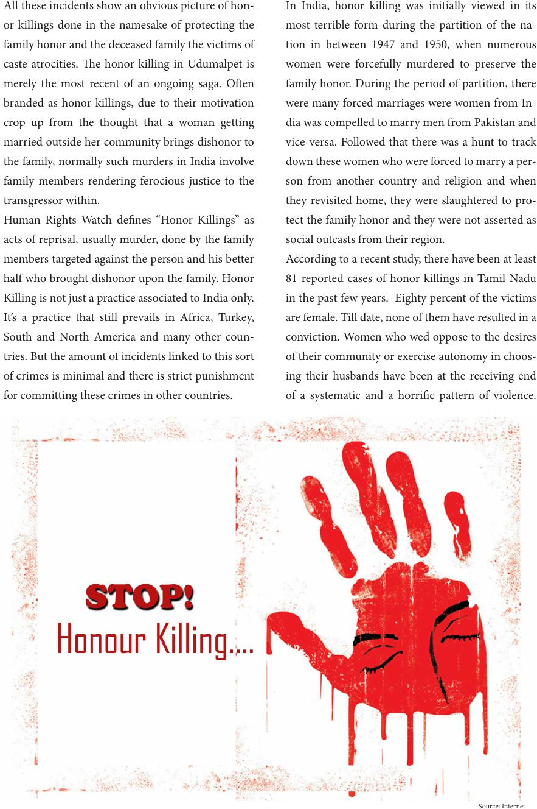

All these incidents show an obvious picture of hon-
or killings done in the namesake of protecting the
family honor and the deceased family the victims of
caste atrocities. e honor killing in Udumalpet is
merely the most recent of an ongoing saga. Oen
branded as honor killings, due to their motivation
crop up from the thought that a woman getting
married outside her community brings dishonor to
the family, normally such murders in India involve
family members rendering ferocious justice to the
transgressor within.
Human Rights Watch denes “Honor Killings” as
acts of reprisal, usually murder, done by the family
members targeted against the person and his better
half who brought dishonor upon the family. Honor
Killing is not just a practice associated to India only.
It’s a practice that still prevails in Africa, Turkey,
South and North America and many other coun-
tries. But the amount of incidents linked to this sort
of crimes is minimal and there is strict punishment
for committing these crimes in other countries.
In India, honor killing was initially viewed in its
most terrible form during the partition of the na-
tion in between 1947 and 1950, when numerous
women were forcefully murdered to preserve the
family honor. During the period of partition, there
were many forced marriages were women from In-
dia was compelled to marry men from Pakistan and
vice-versa. Followed that there was a hunt to track
down these women who were forced to marry a per-
son from another country and religion and when
they revisited home, they were slaughtered to pro-
tect the family honor and they were not asserted as
social outcasts from their region.
According to a recent study, there have been at least
81 reported cases of honor killings in Tamil Nadu
in the past few years. Eighty percent of the victims
are female. Till date, none of them have resulted in a
conviction. Women who wed oppose to the desires
of their community or exercise autonomy in choos-
ing their husbands have been at the receiving end
of a systematic and a horric pattern of violence.
Source: Internet